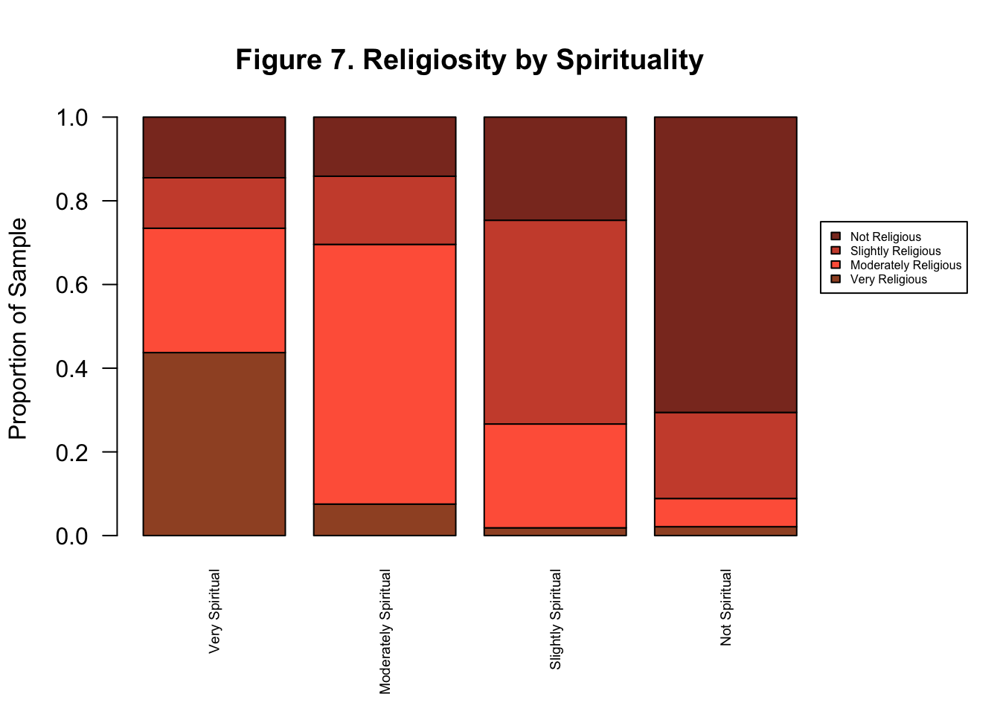

Current Projects
INTRODUCTION
This project focuses on analyzing religiosity amongst a sample of American adults in the 2016 General Social Survey (GSS) dataset. The GSS provides open-source data collected from 1972-present on American demographics, attitudes, beliefs, and behaviors spanning a wide range of topics. The GSS is a reliable source of empirical data on American society and is a crucial resource for students and academics seeking to understand the social world. As previously mentioned, the focus of this project is to better understand and analyze self-reported religiosity amongst American adults, using data from the GSS 2016 question: “To what extent do you consider yourself a religious person?” Specifically though, I’m interested in understanding the association between various demographic characteristics and religiosity, and if religiosity varies amongst different groups. For example, is there an association between religiosity and sex? race? region? highest degree earned? health status? What is the nature of these relationships? Understanding differences in religiosity across various demographic groups can help us to gain a deeper understanding of the culture, attitudes, and beliefs of those groups, as the strength and nature of one’s religious beliefs is known to influence how one conducts one’s life and interacts in society. Additionally, I’m interested in understanding the relationship between religion and spirituality and the ways they may affect each other. Can religiosity be better understood through the lens of spirituality? Is there an association between self-reported religiosity and spirituality?
HYPOTHESES
- Null: There is no association between religiosity & sex. Alternative: There is a significant association between religiosity & sex, where being a woman is associated with higher levels of religiosity.
- Null: There is no association between religiosity & race. Alternative: There is a significant association between religiosity & race, where being a person of color is associated with higher levels of religiosity.
- Null: There is no association between religiosity & region. Alternative: There is a significant association between religiosity & region, where living in southern and Midwestern regions of the US is associated with higher levels of religiosity than living in the Northeast or West Coast.
- Null: There is no association between religiosity & degree. Alternative: There is a significant negative association between religiosity & degree, where having less education is associated with higher levels of self-reported religiosity.
- Null: There is no association between religiosity & health. Alternative: There is a significant negative association between religiosity & health, where having poorer quality health is associated with higher levels of religiosity.
- Null: There is no association between religiosity & spirituality. Alternative: There is a significant positive association between religiosity & spirituality, where being spiritual is associated with higher levels of religiosity.
DESCRIPTIVE STATISTICS
Figure 1 shows the distribution (n=2833) of responses was unimodal and slightly skewed right. 38.5% of respondents (n=1091) reported being “moderately religious,” the mode of the distribution. Additionally, the median response given was also “moderately religious”, and slightly less than half of the respondents consider themselves to be “slightly religious” (22.8%, n=647) or “not religious” (22.2%, n=631). Only 16.4% (n=464) of respondents identify as “very religious.”
library(haven)
gss<- read_sav("~/Documents/SOCI120/GSS2016.sav")
rel_label <- c("Very Religious", "Moderately Religious", "Slightly Religious", "Not Religious")
prop.table(table(gss$relpersn))##
## 1 2 3 4
## 0.1637840 0.3851041 0.2283798 0.2227321barplot(prop.table(table(gss$relpersn)), main = "Figure 1. Religiosity Amongst Americans", xlab = "Self-Reported Religiosity", ylab = "Proportion of Sample", cex.names = 0.75, names.arg = rel_label, col = "coral2")METHODS
In order to test the hypotheses, crosstabs were created and several Chi-squared tests of independence were performed. The Chi-squared test is peformed in order to assess the association between variables of the nominal or ordinal type by comparing observed and expected frequencies. Chi-squared statistics were assessed at the 0.05 level for significance.
RESULTS
Sex
There is a significant association between religiosity and sex [X-squared(df=3) = 36.7, p = 5.258e-08], therefore we can reject the null hypothesis at the 0.05 level. The table below shows that 42.4% of females (n=1591) reported being “moderately religious” while 33.7% of men (n=1276) reported the same. Alternatively, 26.4% of men self-identified as “not religious”, while only 18.9% of women identified as not religious. Given the association between sex and religiosity, these differences in self-reported religiosity are significant. While similar proportions of men and women report being “very religious” (15.2% and 17.3%, respectively) we see that women generally report higher levels of religiosity than men in this sample (see Figure 2).
rel_sex<- table(gss$relpersn, gss$sex)
row.names(rel_sex) <- rel_label
sex_label <- c("Male", "Female")
colnames(rel_sex) <- sex_label
par(mar=c(6,4,4,6.1) + 0.1)
prop.table(rel_sex, 2)##
## Male Female
## Very Religious 0.1518987 0.1733588
## Moderately Religious 0.3370253 0.4238368
## Slightly Religious 0.2468354 0.2135118
## Not Religious 0.2642405 0.1892925barplot(prop.table(rel_sex, 2), main = "Figure 2. Religiosity by Sex", xlab = "Sex", ylab = "Proportion of Sample", col = c("sienna", "tomato", "tomato3", "tomato4"), names.arg = sex_label, legend.text = rel_label, args.legend = list(cex = 0.5, x= 3, y = 0.65))Race
There is a significant association between religiosity and race [X-squared(df=6) = 59.177, p = 6.615e-11], so we can reject the null hypothesis at the 0.05 level. The table below shows that 25.5% of Black Americans (n=490) report being “very religious”, compared to only 14.5% of White Americans (n=2100) and 15.0% of people of other races (n=277). White Americans, however, report being “not religious” to a greater extent (24.6%) than Black and other race Americans (15.9% and 15.8%, respectively). Figure 3 shows that people of different races differ significantly in reporting religiosity at both extreme ends of the spectrum.
rel_race <- table(gss$relpersn, gss$race)
row.names(rel_race) <- rel_label
colnames(rel_race) <- c("White", "Black", "Other")
par(mar=c(6,4,4,6.1) + 0.1)
prop.table(rel_race, 2)##
## White Black Other
## Very Religious 0.1445725 0.2552301 0.1501832
## Moderately Religious 0.3717579 0.4079498 0.4468864
## Slightly Religious 0.2377522 0.1778243 0.2454212
## Not Religious 0.2459174 0.1589958 0.1575092barplot(prop.table(rel_race, 2), main = "Figure 3. Religiosity by Race", xlab = "Race", ylab = "Proportion of Sample", col = c("sienna", "tomato", "tomato3", "tomato4"), names.arg = c("White", "Black", "Other"), legend.text = rel_label, args.legend = list(cex = 0.5, x=4.55, y = 0.65))Region
There is a significant association between religiosity and region [X-squared(df=24) = 85.669, p = 7.418e-09]; therefore we can reject the null hypothesis at the 0.05 level. The table below shows that only 7.5% of respondents who live in New England (n=175) consider themselves to be “very religious” while 20.6% of respondents in the Southern Atlantic region (n=550), 22.7% of respondents in the East South Central region (n=205), and 21.7% of respondents in the West South Central region (n=297) report being “very religious.” Significantly greater percentages of people who live in New England (30.1%), Mid Atlantic (26.7%), West North Central (28.5%), Mountain (27.0%), and Pacific (27.6%) regions report being “not religious” compared to respondents who live in midwestern and southern regions. Figure 4 demonstrates regional differences in religiosity and makes clear the significant differencs between coastal regions (where approximately half of respondents identify as slightly or not religious) and southern and central regions (where greater than half of respondents are very or moderately religious).
rel_region <- table(gss$relpersn, gss$region)
row.names(rel_region) <- rel_label
region_label <- c("New Eng.", "Mid. Atl.", "EN Central", "WN Central", "S Atl.", "ES Central", "WS Central", "Mtn", "Pac")
colnames(rel_region) <- region_label
par(mar=c(6,4,4,6.1) + 0.1)
prop.table(rel_region, 2)##
## New Eng. Mid. Atl. EN Central WN Central
## Very Religious 0.07514451 0.12540193 0.15555556 0.15025907
## Moderately Religious 0.36416185 0.35048232 0.39393939 0.34715026
## Slightly Religious 0.26011561 0.25723473 0.25252525 0.21761658
## Not Religious 0.30057803 0.26688103 0.19797980 0.28497409
##
## S Atl. ES Central WS Central Mtn
## Very Religious 0.20626151 0.22660099 0.21724138 0.15450644
## Moderately Religious 0.40699816 0.42364532 0.45517241 0.33047210
## Slightly Religious 0.20073665 0.19704433 0.18965517 0.24463519
## Not Religious 0.18600368 0.15270936 0.13793103 0.27038627
##
## Pac
## Very Religious 0.12500000
## Moderately Religious 0.35969388
## Slightly Religious 0.23979592
## Not Religious 0.27551020barplot(prop.table(rel_region, 2), main = "Figure 4. Religiosity by Region", las = 2, xlab = "Region", ylab = "Proportion of Sample", col = c("sienna", "tomato", "tomato3", "tomato4"), cex.names = 0.6, names.arg = region_label, legend.text = rel_label, args.legend = list(cex = 0.5, x=13.8, y= 0.65))Highest Degree Earned
There is a significant association between religiosity and highest degree earned [X-squared(df=12), p = 4.382e-06], so we can reject the null hypothesis at the 0.05 level. Figure 5 demonstrates that as education increases, identifying as “very religious” remains relatively stable, while being non-religious increases significantly. This is seen most clearly amongst those with graduate degrees (n=318), as only 15.9% report being “very religious” but 33.1% report being “not religious.” Similarly patterns are observed amongst those with junior college and Bachelor’s degrees. However, amongst those with less than a high school dipoloma (n=381), 20.2% report being “very religious” and only 14.7% identify as “not religious” - about half that of their counterparts with graduate degrees. Interestingly though, greater percentages of people with less than a high school diploma report being “slightly religious” (25.7%) compared to 18.5% of people with a graduate degree. Utlimately, the data supports the hypothesis that there is a significant negative relationship between religiosity and highest degree earned.
rel_degree <- table(gss$relpersn, gss$degree)
row.names(rel_degree) <- rel_label
colnames(rel_degree) <- c("Less HS", "HS", "Jr. College", "Bachelor", "Graduate")
par(mar=c(6,4,4,6.1) + 0.1)
prop.table(rel_degree, 2)##
## Less HS HS Jr. College Bachelor Graduate
## Very Religious 0.2018349 0.1590595 0.1690141 0.1528302 0.1592357
## Moderately Religious 0.3944954 0.4114799 0.3427230 0.3622642 0.3248408
## Slightly Religious 0.2568807 0.2302905 0.2441315 0.2264151 0.1847134
## Not Religious 0.1467890 0.1991701 0.2441315 0.2584906 0.3312102barplot(prop.table(rel_degree, 2), main = "Figure 5. Religiosity by Highest Degree Earned", xlab = "Highest Degree", ylab = "Proportion of Sample",col = c("sienna", "tomato", "tomato3", "tomato4"), names.arg = c("Less HS", "HS", "Jr. College", "Bachelor", "Graduate"), legend.text = rel_label, args.legend = list(cex= 0.5, x = 7.6, y = 0.65))Health
There is a significant association between religiosity and health [X-squared(df=9) = 20.317, p = 0.016], so we can reject the null hypothesis at the 0.05 level. However, while p < 0.05, it is several fold greater than the p-values for the association between religiosity and sex, race, region, and degree. While we can have 95% confidence that the association between religiosity and health status is not due to random chance alone, the robustness of that confidence is somewhat weaker than our confidence in other associations with extremely small p-values. As such, we can see in Figure 6 that the proportion of respondents who identify as “very religious” remains relatively stable across health statuses, somewhat contradictory to the alternative hypothesis that religiosity would increase as health worsened. We do see, though, that of those in excellent health (n=418) and good health (n=919), 27.0% and 21.9% respectively, identified as “not religious” compared to only 17.9% and 18.1% of respondents in fair health (n=73) and poor health (n=19), respectively.
rel_health <- table(gss$relpersn, gss$health)
row.names(rel_health) <- rel_label
health_label <- c("Excellent", "Good", "Fair", "Poor")
colnames(rel_health) <- health_label
par(mar=c(6,4,4,6.1) + 0.1)
prop.table(rel_health, 2)##
## Excellent Good Fair Poor
## Very Religious 0.1756098 0.1611842 0.1717647 0.1637931
## Moderately Religious 0.3292683 0.4155702 0.3835294 0.3965517
## Slightly Religious 0.2243902 0.2039474 0.2658824 0.2586207
## Not Religious 0.2707317 0.2192982 0.1788235 0.1810345barplot(prop.table(rel_health, 2), main = "Figure 6. Religiosity by Health Status", xlab = "Health Status", ylab = "Proportion of Sample", col = c("sienna", "tomato", "tomato3", "tomato4"), names.arg = health_label, legend.text = rel_label, args.legend = list(cex= 0.5, x = 6, y = 0.65))Spirituality
Beyond demographic categories, I was also interested in analyzing the relationship between spirituality and religiosity, to understand if differences in religiosity could be explained by differences in spirituality, and vice versa. There is a significant positive relationship between religiosity and spirituality [X-squared(df=9) = 1422.6, p < 2.2e-16 ]. Therefore, we can reject the null hypothesis at the 0.05 level. The data reveal that there is a strong positive relationship between religiosity and spirituality. If we first treat spirituality as an independent variable and analyze the resulting dependent variable, religiosity, we can see that spirituality and religion group together. Of those that are “very spiritual” (n=833), 43.7% are also “very religious”; of those that are “moderately spiritual” (n=1068), 62.1% are also “moderately religious”; of those that are “slightly spiritual” (n=645), 48.7% are “slightly religious”; and even more robustly - of those that are “not spiritual” (n=284), 70.6% are also “not religious”. When we look at religiousity as the independent variable and spirituality as the dependent variable, we see a similar relationship, in that of those who identify as “strongly religious” (n=464), a large majority (78.6%) also identify as “very spiritual.” Interestingly, though, of those who identify as “not religious” (n=631), less than a third (31.7%) identify as “not spiritual” and actually 19.0% identify as “very spiritual.” This phenomenon has gained wide-spread attention in the media and academic literature in recent decades as the population of “spiritual but not religious” people grow in number and strength.
rel_spirit<-table(gss$relpersn, gss$sprtprsn)
spir_label <- c("Very Spiritual", "Moderately Spiritual", "Slightly Spiritual", "Not Spiritual")
colnames(rel_spirit) <- spir_label
row.names(rel_spirit) <- rel_label
spir_rel <- table(gss$sprtprsn, gss$relpersn)
colnames(spir_rel) <- rel_label
row.names(spir_rel) <- spir_label
colnames(rel_spirit) <- spir_label
row.names(rel_spirit) <- rel_label
prop.table(rel_spirit, 2)##
## Very Spiritual Moderately Spiritual
## Very Religious 0.43727162 0.07532957
## Moderately Religious 0.29719854 0.62052731
## Slightly Religious 0.12058465 0.16290019
## Not Religious 0.14494519 0.14124294
##
## Slightly Spiritual Not Spiritual
## Very Religious 0.01860465 0.02127660
## Moderately Religious 0.24806202 0.06737589
## Slightly Religious 0.48682171 0.20567376
## Not Religious 0.24651163 0.70567376prop.table(spir_rel, 2)##
## Very Religious Moderately Religious
## Very Spiritual 0.78555799 0.22550832
## Moderately Spiritual 0.17505470 0.60905730
## Slightly Spiritual 0.02625821 0.14787431
## Not Spiritual 0.01312910 0.01756007
##
## Slightly Religious Not Religious
## Very Spiritual 0.15372671 0.18979266
## Moderately Spiritual 0.26863354 0.23923445
## Slightly Spiritual 0.48757764 0.25358852
## Not Spiritual 0.09006211 0.31738437par(mar=c(6,4,4,6.1) + 0.1)
barplot(prop.table(rel_spirit, 2), main = "Figure 7. Religiosity by Spirituality", las = 2, ylab = "Proportion of Sample", col = c("sienna", "tomato", "tomato3", "tomato4"), cex.names = 0.6, names.arg = spir_label, legend.text = rel_label, args.legend = list(cex=0.50, x=6, y = 0.75))
barplot(prop.table(spir_rel, 2), main = "Figure 8. Spirituality by Religiosity", las = 2, ylab = "Proportion of Sample", col = c("darkseagreen1", "darkseagreen3", "darkseagreen4", "darkslategrey"), cex.names = 0.6, names.arg = rel_label, legend.text = spir_label, args.legend = list(cex=0.50, x=6, y = 0.75))
Conclusions
Ultimately we see that religiosity is significantly associated with sex, race, region, highest degree earned, health status, and spirituailty at the 0.05 level. There is a significant difference in religiosity between sexes and races, where women and Black Americans report greater religiosity than men and White Americans, respectively. Greater proportions of people living in southern and central regions of the US reported strong religiosity compared to those living on the coasts. There is a negative relationship between religiosity and highest degree earned, as well as religiosity and health status. And there is a positive association between religiosity and spirituality, though there is a significant proportion of non-religious but very spiritual people in the U.S. These findings provide insight into the landscape of American religious and spiritual life, and can help us to gain a better understanding of differences in religiosity (strength of religious beliefs, attitudes, and practices) between various demographic groups in society.
Copyright © 2017 Sheila Shankar. All rights reserved.